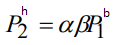
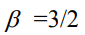

Bu yerda: - Dastlabki holdagi bug' bosimi, - berilgan temperaturadagi bug'ning to'yingan bosimi.
Izotermik siqilish jarayonida suv bug'lari oldin to'yingan bug'ga aylanadi keyin esa bir qismi kondensatsiyalanadi. Ya'ni keyingi qaror topgan bosib ga teng. Quruq havo uchun
 formula o'rinli. Bunda - quruq havo bosimi
formula o'rinli. Bunda - quruq havo bosimi
Demak, hamda bundan quyidagi formulaga kelish mumkin: 
Bu yerda:
- siqilishdan oldingi silindr hajmining siqlishdan keyingi silindr hajmmiga nisbati
 - dastlabki holatda quruq havoning parsial bosimini suv bug'ining parsial bosimiga nisbati
- Siqilishdan keyin qaror topgan bosimni dastlabki bosimga nisbati
formulani yozamiz va yuqoridagi formular yordamida bu formulani shaklini o'zgartiramiz.
Demak: ya'ni ekanligi kelib chiqadi.
Endi bug'ning dastlabki massasini qancha qismi suvga aylanganini hisoblaymiz.
Bu yerda va Suv bug'ining dastlabki va keyingiz modda miqdorlari
Javob: Dastlabki nisbiy namlik 67% va bug'ning dastlabki massasini 62.5% qismi suvga aylangan.